<!DOCTYPE html>


<html class="theme-next gemini use-motion" lang="zh-Hans">

<head>
  <meta name="generator" content="Hexo 3.9.0">
  <!-- hexo-inject:begin -->
  <!-- hexo-inject:end -->
  <meta charset="UTF-8">
  <meta http-equiv="X-UA-Compatible" content="IE=edge">
  <meta name="viewport" content="width=device-width, initial-scale=1, maximum-scale=1">
  <meta name="theme-color" content="#222">


  <meta http-equiv="Cache-Control" content="no-transform">
  <meta http-equiv="Cache-Control" content="no-siteapp">


  <link href="/lib/fancybox/source/jquery.fancybox.css?v=2.1.5" rel="stylesheet" type="text/css">


  <link href="/lib/font-awesome/css/font-awesome.min.css?v=4.6.2" rel="stylesheet" type="text/css">

  <link href="/css/main.css?v=5.1.4" rel="stylesheet" type="text/css">


  <link rel="apple-touch-icon" sizes="180x180" href="/images/apple-touch-icon-next.png?v=5.1.4">


  <link rel="icon" type="image/png" sizes="32x32" href="/images/favicon-32x32-next.png?v=5.1.4">


  <link rel="icon" type="image/png" sizes="16x16" href="/images/favicon-16x16-next.png?v=5.1.4">


  <link rel="mask-icon" href="/images/logo.svg?v=5.1.4" color="#222">


  <meta name="keywords" content="Identity,Zero-Knowledge Prove,Hyperledger,">


<meta name="description" content="一、简述匿名凭证的作用是允许用户证明当前identity符合某个属性，且不暴露出其他属性。本文描述的方法通过使用零知识证明的方式保证属性在披露的过程中不被其他人知道，且可实现凭证一次性使用，第二次用于展示给Verifier的时候会被感知。 由于其原稿难懂，有多个符号错误，计算错误，符号未命名的问题，所以本人进行翻译、纠正。">
<meta name="keywords" content="Identity,Zero-Knowledge Prove,Hyperledger">
<meta property="og:type" content="article">
<meta property="og:title" content="Hyperledger Indy Research: Anonymous credentials with type-3 revocation">
<meta property="og:url" content="https://kyonray.com/2019/08/13/Hyperledger-Indy-Research-Anonymous-credentials-with-type-3-revocation/index.html">
<meta property="og:site_name" content="Kyon&#39;s Blog">
<meta property="og:description" content="一、简述匿名凭证的作用是允许用户证明当前identity符合某个属性，且不暴露出其他属性。本文描述的方法通过使用零知识证明的方式保证属性在披露的过程中不被其他人知道，且可实现凭证一次性使用，第二次用于展示给Verifier的时候会被感知。 由于其原稿难懂，有多个符号错误，计算错误，符号未命名的问题，所以本人进行翻译、纠正。">
<meta property="og:locale" content="zh-Hans">
<meta property="og:image" content="https://kyonray.com/2019/08/13/Hyperledger-Indy-Research-Anonymous-credentials-with-type-3-revocation/Issuer与Prover交互.svg">
<meta property="og:image" content="https://kyonray.com/2019/08/13/Hyperledger-Indy-Research-Anonymous-credentials-with-type-3-revocation/Prover与Verifier交互.svg">
<meta property="og:updated_time" content="2019-09-17T05:44:49.000Z">
<meta name="twitter:card" content="summary">
<meta name="twitter:title" content="Hyperledger Indy Research: Anonymous credentials with type-3 revocation">
<meta name="twitter:description" content="一、简述匿名凭证的作用是允许用户证明当前identity符合某个属性，且不暴露出其他属性。本文描述的方法通过使用零知识证明的方式保证属性在披露的过程中不被其他人知道，且可实现凭证一次性使用，第二次用于展示给Verifier的时候会被感知。 由于其原稿难懂，有多个符号错误，计算错误，符号未命名的问题，所以本人进行翻译、纠正。">
<meta name="twitter:image" content="https://kyonray.com/2019/08/13/Hyperledger-Indy-Research-Anonymous-credentials-with-type-3-revocation/Issuer与Prover交互.svg">


  <script type="text/javascript" id="hexo.configurations">
    var NexT = window.NexT || {};
    var CONFIG = {
      root: '/',
      scheme: 'Gemini',
      version: '5.1.4',
      sidebar: { "position": "left", "display": "post", "offset": 12, "b2t": false, "scrollpercent": false, "onmobile": false },
      fancybox: true,
      tabs: true,
      motion: { "enable": true, "async": false, "transition": { "post_block": "fadeIn", "post_header": "slideDownIn", "post_body": "slideDownIn", "coll_header": "slideLeftIn", "sidebar": "slideUpIn" } },
      duoshuo: {
        userId: '0',
        author: '博主'
      },
      algolia: {
        applicationID: '',
        apiKey: '',
        indexName: '',
        hits: { "per_page": 10 },
        labels: { "input_placeholder": "Search for Posts", "hits_empty": "We didn't find any results for the search: ${query}", "hits_stats": "${hits} results found in ${time} ms" }
      }
    };
  </script>


  <link rel="canonical"
    href="https://kyonray.com/2019/08/13/Hyperledger-Indy-Research-Anonymous-credentials-with-type-3-revocation/">


  <title>Hyperledger Indy Research: Anonymous credentials with type-3 revocation | Kyon's Blog</title>
  <!-- hexo-inject:begin -->
  <!-- hexo-inject:end -->


</head>

<body itemscope itemtype="http://schema.org/WebPage" lang="zh-Hans">


  <!-- hexo-inject:begin -->
  <!-- hexo-inject:end -->
  <div class="container sidebar-position-left page-post-detail">
    <div class="headband"></div>

    <header id="header" class="header" itemscope itemtype="http://schema.org/WPHeader">
      <div class="header-inner">
        <div class="site-brand-wrapper">
          <div class="site-meta ">


            <div class="custom-logo-site-title">
              <a href="/" class="brand" rel="start">
                <span class="logo-line-before"><i></i></span>
                <span class="site-title">Kyon's Blog</span>
                <span class="logo-line-after"><i></i></span>
              </a>
            </div>

            <p class="site-subtitle">Learning, Sharing.</p>

          </div>

          <div class="site-nav-toggle">
            <button>
              <span class="btn-bar"></span>
              <span class="btn-bar"></span>
              <span class="btn-bar"></span>
            </button>
          </div>
        </div>

        <nav class="site-nav">


          <ul id="menu" class="menu">


            <li class="menu-item menu-item-home">
              <a href="/" rel="section">

                <i class="menu-item-icon fa fa-fw fa-home"></i> <br>

                首页
              </a>
            </li>


            <li class="menu-item menu-item-about">
              <a href="/about/" rel="section">

                <i class="menu-item-icon fa fa-fw fa-user"></i> <br>

                关于
              </a>
            </li>


            <li class="menu-item menu-item-tags">
              <a href="/tags/" rel="section">

                <i class="menu-item-icon fa fa-fw fa-tags"></i> <br>

                标签
              </a>
            </li>


            <li class="menu-item menu-item-categories">
              <a href="/categories/" rel="section">

                <i class="menu-item-icon fa fa-fw fa-th"></i> <br>

                分类
              </a>
            </li>


            <li class="menu-item menu-item-archives">
              <a href="/archives/" rel="section">

                <i class="menu-item-icon fa fa-fw fa-archive"></i> <br>

                归档
              </a>
            </li>


            <li class="menu-item menu-item-search">

              <a href="javascript:;" class="popup-trigger">


                <i class="menu-item-icon fa fa-search fa-fw"></i> <br>

                搜索
              </a>
            </li>

          </ul>


          <div class="site-search">

            <div class="popup search-popup local-search-popup">
              <div class="local-search-header clearfix">
                <span class="search-icon">
                  <i class="fa fa-search"></i>
                </span>
                <span class="popup-btn-close">
                  <i class="fa fa-times-circle"></i>
                </span>
                <div class="local-search-input-wrapper">
                  <input autocomplete="off" placeholder="搜索..." spellcheck="false" type="text" id="local-search-input">
                </div>
              </div>
              <div id="local-search-result"></div>
            </div>


          </div>

        </nav>


      </div>
    </header>

    <main id="main" class="main">
      <div class="main-inner">
        <div class="content-wrap">
          <div id="content" class="content">


            <div id="posts" class="posts-expand">


              <article class="post post-type-normal" itemscope itemtype="http://schema.org/Article">

            </div>


            <footer class="post-footer">

              <div class="post-tags">

                <a href="/tags/Identity/" rel="tag"># Identity</a>

                <a href="/tags/Zero-Knowledge-Prove/" rel="tag"># Zero-Knowledge Prove</a>

                <a href="/tags/Hyperledger/" rel="tag"># Hyperledger</a>

              </div>


              <div class="post-block">
                <link itemprop="mainEntityOfPage"
                  href="https://kyonray.com/2019/08/13/Hyperledger-Indy-Research-Anonymous-credentials-with-type-3-revocation/">

                <span hidden itemprop="author" itemscope itemtype="http://schema.org/Person">
                  <meta itemprop="name" content="Kyon Kwok">
                  <meta itemprop="description" content>
                  <meta itemprop="image" content="http://img.inmywordz.com/uploads/20170527171017_34.png">
                </span>
                
                  <span class="post-meta-item-text">字数统计&#58;</span>
                
                <span title="字数统计">
                  6.1k
                </span>


                <header class="post-header">


                  <h1 class="post-title" itemprop="name headline">Hyperledger Indy Research: Anonymous credentials
                    with type-3 revocation</h1>


              </div>


              <footer class="post-footer">

                <div class="post-tags">

                  <a href="/tags/Identity/" rel="tag"># Identity</a>

                  <a href="/tags/Hyperledger/" rel="tag"># Hyperledger</a>

                  <a href="/tags/Zero-Knowledge-Prove/" rel="tag"># Zero-Knowledge Prove</a>

                </div>


                <span class="post-meta-item-icon">
                  <i class="fa fa-clock-o"></i>
                </span>
                
                  <span class="post-meta-item-text">阅读时长 &asymp;</span>
                
                <span title="阅读时长">
                  31
                </span>

                <span class="post-meta-item-text">发表于</span>

                <time title="创建于" itemprop="dateCreated datePublished" datetime="2019-08-13T12:10:24+08:00">
                  2019-08-13
                </time>


                <div class="post-nav-prev post-nav-item">

                </div>
          </div>


          </span>


          <span class="post-category">

            <span class="post-meta-divider">|</span>

            <span class="post-meta-item-icon">
              <i class="fa fa-folder-o"></i>
            </span>

            <span class="post-meta-item-text">分类于</span>


            <span itemprop="about" itemscope itemtype="http://schema.org/Thing">
              <a href="/categories/区块链项目/" itemprop="url" rel="index">
                <span itemprop="name">区块链项目</span>
              </a>
            </span>


          </span>


          <span class="post-comments-count">
            <span class="post-meta-divider">|</span>
            <span class="post-meta-item-icon">
              <i class="fa fa-comment-o"></i>
            </span>
            <a href="/2019/08/13/Hyperledger-Indy-Research-Anonymous-credentials-with-type-3-revocation/#comments"
              itemprop="discussionUrl">
              <span class="post-comments-count valine-comment-count"
                data-xid="/2019/08/13/Hyperledger-Indy-Research-Anonymous-credentials-with-type-3-revocation/"
                itemprop="commentCount"></span>
            </a>
          </span>


          <span id="/2019/08/13/Hyperledger-Indy-Research-Anonymous-credentials-with-type-3-revocation/"
            class="leancloud_visitors"
            data-flag-title="Hyperledger Indy Research: Anonymous credentials with type-3 revocation">
            <span class="post-meta-divider">|</span>
            <span class="post-meta-item-icon">
              <i class="fa fa-eye"></i>
            </span>

            <span class="post-meta-item-text">阅读次数&#58;</span>

            <span class="leancloud-visitors-count"></span>
          </span>


          <div class="post-wordcount">


            <span class="post-meta-item-icon">
              <i class="fa fa-file-word-o"></i>
            </span>

            <span class="post-meta-item-text">字数统计&#58;</span>

            <span title="字数统计">
              6.4k
            </span>


            <span class="post-meta-divider">|</span>


            <span class="post-meta-item-icon">
              <i class="fa fa-clock-o"></i>
            </span>

            <span class="post-meta-item-text">阅读时长 &asymp;</span>

            <span title="阅读时长">
              33
            </span>

          </div>


        </div>
      </header>
    

    
    
    
    <div class="post-body" itemprop="articleBody">

      
      

      
        <h2><span id="一-简述">一、简述</span></h2><p>匿名凭证的作用是允许用户证明当前identity符合某个属性，且不暴露出其他属性。本文描述的方法通过使用零知识证明的方式保证属性在披露的过程中不被其他人知道，且可实现凭证一次性使用，第二次用于展示给Verifier的时候会被感知。</p>
<p>由于其原稿难懂，有多个符号错误，计算错误，符号未命名的问题，所以本人进行翻译、纠正。</p>
<a id="more"></a>
<p>Indy选择性披露核心的流程在于：</p>
<p>Init：</p>
<ul>
<li><p>issuser生成属性模板</p>
</li>
<li><p>prover/holder使用自己的私钥master key和属性（可以盲化或不盲化），用属性模板生成证明，向issuer获取证书</p>
</li>
<li><p>issuer用自己的私钥对属性进行签名，将其发送给Holder</p>
</li>
</ul>
<p>Verify：</p>
<ul>
<li><p>prover选择要披露的属性，，根据证书生成证书的proof，将proof和属性给Verifier</p>
</li>
<li><p>Verifier根据issuer的公钥，proof，属性。用证书验证属性是否在proof里。验证proof是否是由Issuer的公钥签发</p>
</li>
</ul>
<p>核心性质：</p>
<ul>
<li><p>不可伪造性(unforgeable)，即没有人可以使用未经Issuer签发的凭证通过Verifier的验证</p>
</li>
<li><p>不可链接性(unlinkable)，即不可能使用同样的凭证与多个匿名的presentation关联。技术上用knowledge proof证明他拥有凭证。</p>
</li>
<li><p>可拓展性(delegatable)，Prover A可以将具有特定属性X的证书C(credential)委托给Prover B，同时Verifier在当B提供属性Y的时候不获取A的身份。技术上代表可以进一步创建证书链。</p>
</li>
</ul>
<h2><span id="二-protocol-overview">二、Protocol Overview</span></h2><p>最简单的凭证生命周期：一个凭证，单个issuer，单个持有人，单个验证者</p>
<ol>
<li>Issuer制定凭证模板$\mathcal S$：签凭证使用的密码学类型、$l$ 个凭证属性、隐藏属性 $A_h \subset \{1,2,…,l\}$ 、凭证公钥 $P_k$ 、非撤销凭证属性数$l_r$ 非撤销公钥$P_r$ ，并将凭证公布到区块链上，定义其语义；</li>
<li>Holder检索到凭证模板，并设定隐藏属性；</li>
<li>Holder想Issuer请求凭证，并将隐藏属性以黑盒的形式发给Issuer，并对已知属性的值达成协议 $A_k=\{1,2,…,l\}/A_h$ ；</li>
<li>Issuer返回凭证对$（C_p，C_{NR}）$ 给Holder。第一个 $C_p$ 凭证包括了必须设定的 $l$个属性，第二个$C_{NR}$ 赋值了第一个凭证的非撤销状态；Issuer随后将该凭证的未撤销状态公布到链上；</li>
<li>Holder连接到Verifier，Verifier发送证明请求 $\mathcal E$ 给Holder，证明请求包括了凭证模板$\mathcal{S}_E$ 和披露断言 $\mathcal D$ ；对于属性 $m$ 与验证值 $V$ 的披露断言模式可以有 $m&gt;V, m&lt;V, m=V$ ；</li>
<li>Holder检查所持有的凭证对是否符合 Verifier发来的模板 $\mathcal{S}_E$ ，并从区块链中检索该模板未被撤销的见证(witness)；</li>
<li>Holder 使用符合证明请求 $\mathcal E$ 的未撤销凭证，生成了证明 $P$ ，并发送给Verifier；</li>
<li>Verifier验证证明$P$；</li>
</ol>
<p>以下<strong>时序图</strong>描述整个协议流程：</p>
<p>Prover与Issuer交互：</p>
<p></p>
<p>Prover与Verifier交互：</p>
<p></p>
<h2><span id="三-具体方案步骤">三、具体方案步骤</span></h2><p>接下来以整个方案的流程逐步详细介绍：</p>
<h3><span id="1-schema准备">1. Schema准备</span></h3><h4><span id="11-issuer定义凭证属性">1.1 Issuer定义凭证属性</span></h4><p><strong>（1.1.1）</strong>Issuer定义一个有 $l$ 个属性 $\{m_1,…,m_l\}$ 的Schema $\mathcal{S}$ ，并设置隐藏属性集合 $A_h \subset \{1,2,…,l\}$ 。</p>
<p>在Sovrin中，$m_1$ 保留为链接向Holder的链接， $m_2$ 保留为枚举器， $m_3$ 保留为策略地址$I$ ，并且$\{1,3\}\subset A_h, and\ 2 \notin A_h$；</p>
<p>Issuer定义非撤销凭证内含 $m_1,m_2$ 两个属性；</p>
<h4><span id="12-issuer定义凭证密码方法">1.2 Issuer定义凭证密码方法</span></h4><ul>
<li><strong>（1.2.1）</strong>Issuer使用CL签名算法，生成一组<strong>Primary Credentia</strong>l公私钥对：<ul>
<li>随机获取1024-bit的素数  $p’, q’$ ，计算： $p\leftarrow 2p’+1,\ q\leftarrow 2q’+1,\ n\leftarrow pq$</li>
<li>随机取模n的二次剩余 $S$ ：$S$ 不是n的倍数，且mod n同余于某个数的平方，例如 $S\equiv x^2(mod\ n),\ S^{(n-1)/2}\equiv 1(mod\ n)$ ；</li>
<li>随机取 $x_Z，x_{R_1},…,x_{R_l}\ \in[2;p’q’-1]$</li>
<li>计算得公钥 $P_k = (n,S,Z\leftarrow S^{x_Z},\{R_i\leftarrow S^{x_{R_i}}\}_{1\leqslant i \leqslant l})$ ，私钥 $s_k=(p’,q’)$</li>
</ul>
</li>
</ul>
<h4><span id="13-issuer提供凭证密钥正确性">1.3 Issuer提供凭证密钥正确性</span></h4><ul>
<li><p><strong>（1.3.1）</strong> Issuer生成一堆随机数 $\widetilde{x_Z}，\widetilde{x_{R_1}},…,\widetilde{x_{R_l}}\ \in[2;p’q’-1]$</p>
</li>
<li><p>Issuer计算：</p>
</li>
</ul>
<script type="math/tex; mode=display">
\widetilde{Z}\leftarrow S^{\widetilde{x_Z}}\\
\{\widetilde{R_i}\leftarrow S^{\widetilde{x_{R_i}}}(mod\ n)\}_{i\le i\le l}\\
c\leftarrow H_1(Z||\widetilde Z||\{R_i,\widetilde{R_i}\}_{1\le i\le l})\\
\widehat{x_Z}\leftarrow \widetilde{x_Z}+cx_Z\\
\{\widehat{x_{R_i}}\leftarrow \widetilde{x_{R_i}}+cx_{R_i}\}_{1\le i\le l}</script><ul>
<li>Issuer最终将证明 $\mathcal P_I=(c,\widehat{x_Z},\{\widehat{x_{R_i}}\}_{1\le i\le l})$  发送出去。</li>
</ul>
<h4><span id="14-issuer定义non-revocation凭证">1.4 Issuer定义Non-revocation凭证</span></h4><ul>
<li><p><strong>（1.4.1）</strong>Issuer使用CKS聚合器与签名方法以追踪Primary Credential的撤销状态，生成一组<strong>Non-revocation Credential</strong>的密钥对：</p>
<ul>
<li>设有双线性配对群 $(q, \Bbb{G}_1,\Bbb{G}_2, \Bbb{G}_t,e,g,g’)$ ，其中 $\Bbb{G}_1,\Bbb{G}_2,\Bbb{G}_t$ 都是素数 $q$ 阶群，$e : \Bbb{G}_t \leftarrow \Bbb{G}_1 × \Bbb{G}_2$ 是一种映射关系，$g,g’$ 分别是 $\Bbb{G}_1,\Bbb{G}_2$ 的生成子。</li>
<li>随机生成 $h,h_0,h_1,h_2, \widetilde{h} \in \Bbb{G}_1$ ；</li>
<li>随机生成 $u,\widehat{h} \in \Bbb{G}_2$ ；</li>
<li>随机生成 $sk, x \in \Bbb{Z}_q$ ；</li>
<li>计算得出撤销公钥： $P_r=(g,g’,h,h_0,h_1,h_2,\widetilde{h}, \widehat{h},u,pk\leftarrow g^{sk},y\leftarrow \widehat{h}^x)$ 得出私钥 $(x,sk)$ </li>
</ul>
</li>
<li><p><strong>（1.4.2）</strong>Issuer生成新的聚合器(Accumulator) $A$ ，其中 $L$ 是凭证的index ：</p>
<ul>
<li><p>随机生成 $\gamma \in \Bbb{Z}_q$ ；</p>
</li>
<li><p>计算：</p>
</li>
</ul>
<script type="math/tex; mode=display">
\tag{1.1}g_1,g_2,…,g_L,g_{L+2},…,g_{2L},\ where\ g_i=g^{\gamma^i}</script><script type="math/tex; mode=display">
\tag{1.2}g'_1,g'_2,…,g'_L,g_{L+2},…,g'_{2L},\ where\ g'_i=g'^{\gamma^i}</script><script type="math/tex; mode=display">
\tag{1.3}z=(e(g,g'))^{\gamma^{L+1}}</script></li>
</ul>
<ul>
<li><p>设置值 $V\leftarrow \emptyset$ ，聚合器 $acc\leftarrow 1$ ；</p>
</li>
<li><p>进而得出聚合器的公钥 $P_a=(z)$ ，私钥 $(\gamma)$ ；</p>
</li>
<li><p>之后Issuer把 $(P_a,V)$ 公布到区块链上供其他人进行累积、验证， 聚合器的DID设置为 $ID_a=z$ 。</p>
</li>
</ul>
<h3><span id="2-credential发行">2. Credential发行</span></h3><h4><span id="21-holder获取凭证模板进行验证模板是issuer发的">2.1 Holder获取凭证模板，进行验证模板是Issuer发的</span></h4><p>Holder拿到模板以及Issuer的公钥、证明 $(c,\widehat{x_Z},\{\widehat{x_{R_i}}\}_{1\le i\le l})$ ，进行进一步计算：</p>
<script type="math/tex; mode=display">
\widehat Z\leftarrow Z^{-c}S^{\widehat{x_Z}}\ (mod\ n)\\
\{\widehat{R_i}\leftarrow R_i^{-c}S^{\widehat{x_{R_i}}}\ (mod\ n)\}_{1\le i\le l}</script><p>验证：</p>
<script type="math/tex; mode=display">
c=H_1(Z||\hat Z||\{R_i,\widehat{R_i}\}_{1\le i\le l})</script><h4><span id="22-holder进行凭证设定">2.2 Holder进行凭证设定</span></h4><ul>
<li><p>Holder从区块链中获取了凭证的模板 $\mathcal S$ ，并设置属性 $\{m_i\}_{i\in A_h}$ ，其余未设置的属性皆为0；</p>
</li>
<li><p>Holder建立与Issuer的连接，从Issuer那获取随机数 $n_0$ ，Holder的DID为 $\mathcal{H}$ ；</p>
</li>
<li><p><strong>（2.2.1）</strong>Holder做以下计算，为Primary Credential的数据做准备：</p>
<ul>
<li><p>生成 2128-bit随机数 $v’$ ，673-bit随机数 $\widetilde{v’}$ </p>
</li>
<li><p>生成593-bit随机数 $\{\widetilde{m_i}\}_{i\in A_h}$</p>
</li>
<li><p>使用Primary Credential的公钥 $P_k$ 计算Primary Credential的盲化secret： </p>
<script type="math/tex; mode=display">
\tag{2.1}U\leftarrow (S^{v'})\prod_{i\in A_h}R_i^{m_i}</script></li>
<li><p>计算commitment Attribute属性值 $vca$ ，其中 $blind$ 是盲化因子：</p>
<script type="math/tex; mode=display">
\tag{2.2}
\{vca_i\}_{i\in A_{commit}}=\{S^{blind}\cdot Z^{m_i}\}_{i\in A_{commit}}\\
\widetilde{r_i}=rand(593bit)_{i\in A_{commit}}</script></li>
</ul>
<script type="math/tex; mode=display">
\tag{2.3}\{\widetilde{commitment_i}=Z^{\widetilde{m_i}}\cdot S^{\widetilde{r_i}}\}_{i\in A_{commit}}</script></li>
</ul>
<ul>
<li><p>另外计算盲化正确proof：</p>
<script type="math/tex; mode=display">
\tag{2.4}\widetilde{U}\leftarrow (S^{\widetilde v'})\prod_{i\in A_h}R_i^{\widetilde m_i}</script><script type="math/tex; mode=display">
\tag{2.5}c\leftarrow H(\{\widetilde{commitment_i}\}||\{vca_i\}||U||\widetilde U||n_0)_{i\in A_{commit}}</script><script type="math/tex; mode=display">
\tag{2.6}\widehat{v'}\leftarrow \widetilde{v'} + cv'</script></li>
</ul>
<script type="math/tex; mode=display">
\tag{2.7.1}\{\widehat{m_i}\leftarrow \widetilde{m_i} +cm_i\}_{i\in A_h}</script><script type="math/tex; mode=display">
\tag{2.7.2}
\{\widehat{r_i}\leftarrow \widetilde{r_i}+c\cdot blind\}_{i\in A_{commit}}</script><ul>
<li><p>生成80-bit随机数 $n_1$</p>
</li>
<li><p>将 $\{U,c,\widehat{v’},\{\widehat{m_i}\}_{i\in A_h},n_1,attr_name\subset\{A_h\},\{A_{commit}\}=\{attr_name,vca\}\}$ 打包发送给Issuer</p>
</li>
<li><p><strong>（2.2.2）</strong>Holder做以下计算，为Non-Credential的数据做准备：</p>
<ul>
<li><p>获取撤销公钥 $P_R$ ，并生成随机数 $s’_R \in \Bbb{Z}_q$ ；</p>
</li>
<li><p>计算</p>
<script type="math/tex; mode=display">
 \tag{2.8}U_R\leftarrow h_2^{s'_R},\ where\ h_2\ in\ P_R</script></li>
<li><p>将 $U_R$ 发送给Issuer</p>
</li>
</ul>
</li>
</ul>
<h4><span id="23-issuer收到凭证模板确认后颁发">2.3 Issuer收到凭证模板，确认后颁发</span></h4><ul>
<li><p><strong>（2.3.1）</strong>Issuer验证Holder发来的Primary Credential模板数据是否正确：</p>
<ul>
<li>计算$\widehat{U}\leftarrow (U^{-c})\prod_{i\in A_h}R_i^{\widehat m_i}(S^{\widehat{v’}})$ ；</li>
<li>$\{\widehat{commitment_i}\leftarrow vca_i^{-c}\cdot Z^{\widehat{m_i}}S^{\widehat{r_i}}\}_{i\in A_{commit}}$</li>
<li>验证$c= H(\{\widehat{commitment_i}\}||\{vca_i\}||U||\widehat U||n_0)_{i\in A_{commit}}$  ；</li>
</ul>
</li>
<li><p>验证 $\widehat{v’}$ 是一个673-bit的数，$\{\widehat{m_i},\widehat{r_i}\}_{i\in A_h}$ 是594-bit的数；</p>
</li>
<li><p><strong>（2.3.2）</strong>Issuer准备为Holder发行Primary凭证：</p>
<ul>
<li>为当前Holder赋值一个唯一值 $i&lt;L$ 作为标识, 计算 $m_2\leftarrow H(i||\mathcal{H})$ 记录了当前Holder 的信息，并将 $m_2$ 和$i$保存在本地数据库；</li>
<li>设置可被披露的属性值 $A_k$ ；</li>
<li>生成2724-bit 随机数 $v’’$, 随机素数 $e,\ where\ 2^{596}\leqslant e \leqslant 2^{596}+2^{119}$ ；</li>
<li>随机生成 $r&lt;p’q’$ ，其中 $p’,q’$ 从Primary凭证私钥中得出 ;</li>
<li>计算<strong>签名</strong>： </li>
</ul>
<script type="math/tex; mode=display">
\tag{2.9}Q\leftarrow \cfrac{Z}{US^{v''}\prod_{i\in A_k}R_i^{m_i}(mod\ n)}\\</script><script type="math/tex; mode=display">
\tag{2.10}A\leftarrow Q^{e^{-1}(mod\ p'q')}(mod\ n)</script><ul>
<li>计算签名<strong>Proof</strong>：<script type="math/tex; mode=display">
\tag{2.11}\widehat A\leftarrow Q^r\ (mod\ n)</script><script type="math/tex; mode=display">
\tag{2.12}c' \leftarrow H(Q||A||\widehat A||n_1)</script><script type="math/tex; mode=display">
\tag{2.13}s_e\leftarrow r-c'e^{-1}\ (mod\ p'q')</script></li>
</ul>
</li>
<li><p><strong>（2.3.3）</strong>Issuer 将primary pre-credential $(\{m_i\}_{i\in A_k},A,e,v’’,s_e,c’)$ 发送给Holder；</p>
</li>
<li><p><strong>（2.3.4）</strong>Issuer 非撤销凭证（Non-revocation Credential）的颁发</p>
<ul>
<li><p>生成随机数 $s’’,c\leftarrow Z_q$ ；</p>
</li>
<li><p>将Primary凭证中的 $m_2$ 也加入到非撤销凭证中，进行两个凭证的关联；</p>
</li>
<li><p>$acc_V$是聚合器值，为证书分配一个未使用的索引index $i$ ，$V$ 是现在未被撤销的集合；</p>
</li>
<li><p>计算（其中L为最多颁发的证书个数，在代码中表示为n）：</p>
<script type="math/tex; mode=display">
\tag{2.14} \sigma \leftarrow (h_0h_1^{m_2}\cdot U_R\cdot g_i\cdot h_2^{s''})^{\cfrac{1}{x+c}}</script><script type="math/tex; mode=display">
\tag{2.15}w\leftarrow \prod_{j\in V}g'_{L+1-j+i}</script><script type="math/tex; mode=display">
\tag{2.16}
\sigma_i \leftarrow g'^{1/(sk+\gamma^i)}</script><script type="math/tex; mode=display">
\tag{2.17}
u_i \leftarrow u^{\gamma_i}</script><script type="math/tex; mode=display">
\tag{2.18}
acc_V\leftarrow acc_V\cdot g'_{L+1-i}</script><script type="math/tex; mode=display">
\tag{2.19}
V\leftarrow V\cup\{i\}</script><script type="math/tex; mode=display">
\tag{2.20}
wit_i\leftarrow \{\sigma_i,u_i,g_i,w,V\}</script></li>
<li><p>将非撤销凭证 $(I_A,\sigma,c,s’’,wit_i,g_i,g’_i,i)$ 发给Holder；</p>
</li>
<li><p>将更新的 $V,acc_V$ 放到区块链中；</p>
</li>
</ul>
</li>
</ul>
<h4><span id="24-holder收到两个凭证进行存储">2.4 Holder收到两个凭证，进行存储</span></h4><ul>
<li><p><strong>（2.4.1）</strong>Holder存储凭证</p>
</li>
<li><p>计算 $v\leftarrow v’+v’’$；</p>
</li>
<li><p>验证 $e$ 是素数，且符合 $2^{596}\leqslant e \leqslant 2^{596}+2^{119}$ ；</p>
<ul>
<li>计算：<script type="math/tex; mode=display">
\tag{2.21}Q\leftarrow \cfrac{Z}{S^v \prod_{i\in C_S}R_i^{m_i}}\ (mod\ n)</script></li>
</ul>
</li>
<li><p><strong>（2.4.2）</strong>验证 $Q=A^e(mod\ n)$；</p>
</li>
<li><p><strong>（2.4.3）</strong>计算：</p>
<script type="math/tex; mode=display">
  \tag{2.22}\widehat A \leftarrow A^{c'+s_e\cdot e}</script><ul>
<li>验证 $c’=H(Q||A||\widehat A||n_1)$ ；</li>
</ul>
</li>
<li><p>存储Primary凭证$C_p=(\{m_i\}_{i\in C_s},A,e,v)$ ；</p>
</li>
<li><p>计算 $s\leftarrow s’_R+s’’$， 存储非撤销凭证 $C_{NR}\leftarrow(I_A,\sigma,c,s,wit_i,g_i,g’_i,i)$ ；</p>
</li>
<li><p><strong>（2.4.4）</strong>三个等式证明Holder收到的Non-revocation 凭证的正确性</p>
<script type="math/tex; mode=display">
\cfrac{e(g_i,acc_V)}{e(g,w)}=z\\
e(pk\cdot g_i,\sigma_i)=e(g,g')\\
e(\sigma,y\cdot \widehat h^{c})=e(h_0\cdot h_1^{m_2}h_2^sg_i,\widehat h)</script></li>
</ul>
<h3><span id="3-凭证撤销">3. 凭证撤销</span></h3><p><strong>（3.1）</strong>Issuer在数据库找到要被撤销的凭证，并找出他的索引号 $i$ ，以及聚合器 $A$，有效凭证集合 $V$ </p>
<ul>
<li>从 $V$ 中剔除 $i$ ： $V \leftarrow V -\{i\}$ ；</li>
<li>从聚合器中剔除：$acc_V\leftarrow acc_V/g’_{L+1-i}$ ；</li>
<li>公布出新的 $\{V,acc_V\}$ ；</li>
</ul>
<h3><span id="4-holder展示凭证">4. Holder展示凭证</span></h3><h4><span id="41-verifier向holder发出proof-request">4.1 Verifier向Holder发出Proof Request</span></h4><ul>
<li>Verifier向Holder发出 $d$ 个凭证模板集合 $\{\mathcal S_1,\mathcal S_2,…\mathcal S_d\}$ 的证明请求（Proof Request）；</li>
<li>Holder 需要对应的给出 $d$ 个凭证证明对 $(C_p,C_{NR})$ 回应；</li>
<li>假设模板集合有 $X$ 个属性，其中，公开属性集合 $x_1:A_h=X-x_1$ ，需证明相等的属性 $x_2: m_i=m_j$ ，需证明不相等属性 $x_3:m_i(&gt;&lt;\geq \leq) z$  ；</li>
<li>$x_4=X-x_1-x_2$ ，映射 $\phi:A_h\ to\ \{1,2,…,x_4\}$，$A_v$ 表示 $x_1$ 披露的属性索引集合；</li>
<li>Verifier给Holder发80-bit随机数 $n_2$ ，用于之后与Holder交互；</li>
</ul>
<h4><span id="42-holder提供证明">4.2 Holder提供证明</span></h4><ul>
<li><p><strong>（4.2.1）</strong>Holder准备对应凭证对 $(C_p,C_{NR})$ 去验证；</p>
<ul>
<li>生成 $x_4$ 个592-bit随机数 $\widetilde{y_1},\widetilde{y_2},…,\widetilde{y_{x_4}}$ ，并设定 $\widetilde{m_j}\leftarrow \widetilde{y_{\phi(j)}} , where\ j\in A_h$ ；</li>
<li>生成两个空集合 $\mathcal T,\mathcal C$ ；</li>
<li>对所有凭证对 $(C_p,C_{NR})$ 都准备证明；</li>
</ul>
</li>
<li><p><strong>（4.2.2）</strong>Holder给出非撤销证明：</p>
<ul>
<li><p>加载Issuer的撤销公钥 $p=(h,h_1,h_2,\widetilde h,\widehat h,u,pk,y)$ ；</p>
</li>
<li><p>加载非撤销凭证 $C_{NR}=(I_A,\sigma,c,s,wit_i,g_i,g’_i,i)$ ；</p>
</li>
<li><p>获取现在的未撤销凭证索引集合 $V$ ，聚合器 $acc$ ；</p>
</li>
<li><p>更新非撤销凭证 $C_{NR}$ ：</p>
<script type="math/tex; mode=display">
\tag{4.1}w\leftarrow w\cdot \cfrac{\prod_{j\in (V\backslash V_{old})}g'_{L+1-j+i}}{\prod_{j\in (V_{old}\backslash V)}g'_{L+1-j+i}};\ where\ V_{old}\ is\ from\ wit_i;\\
V_{old}\leftarrow V;</script></li>
<li><p>随机取随机数： $\rho,r,r’,r’’,r’’’,o,o’\ mod\ q$ ；</p>
</li>
<li><p>计算以下公式，并将最终所得放到集合 $\mathcal C$ ：</p>
</li>
</ul>
<script type="math/tex; mode=display">
\tag{4.2}
E\leftarrow h^{\rho}\widetilde h^o;</script><script type="math/tex; mode=display">
\tag{4.3}
D\leftarrow g^{r}\widetilde h^{o'};</script><script type="math/tex; mode=display">
\tag{4.4}
A\leftarrow \sigma \widetilde h^{\rho};</script><script type="math/tex; mode=display">
\tag{4.5}
\mathcal G \leftarrow g_i\widetilde h^r;</script><script type="math/tex; mode=display">
\tag{4.6}
\mathcal W \leftarrow w\widehat h^{r'};</script><script type="math/tex; mode=display">
\tag{4.7}
\mathcal S \leftarrow \sigma_i \widehat h^{r''};</script><script type="math/tex; mode=display">
\tag{4.8}
\mathcal U \leftarrow u_i\widehat h^{r'''};</script><blockquote>
<p>E、D分别是对$\rho$ 和 $r$ 的承诺</p>
</blockquote>
</li>
</ul>
<p>&gt;</p>
<blockquote>
<p>$\mathcal G$, $\mathcal W$, $\mathcal S$, $\mathcal U$ 分别是对$g_i$, $w$, $\sigma_i$, $u_i$的盲化</p>
<p>$NonRevocProofCList \leftarrow  \{ E, D, A, \mathcal G, \mathcal W, \mathcal S, \mathcal U \}$, 作为c_list</p>
<p>以上过程由ProofBuilder::_create_c_list_values() 完成</p>
</blockquote>
<ul>
<li><p>计算：</p>
<script type="math/tex; mode=display">
\tag{4.9}
m\leftarrow \rho \cdot c;</script><script type="math/tex; mode=display">
\tag{4.10}
t\leftarrow o\cdot c;</script><script type="math/tex; mode=display">
\tag{4.11}
m'\leftarrow r\cdot r'';</script><script type="math/tex; mode=display">
\tag{4.12}
t'\leftarrow o'\cdot r'';</script></li>
<li><p>随机取随机数：$\widetilde{\rho},\widetilde{o},\widetilde{o’},\widetilde{c},\widetilde{m},\widetilde{m’},\widetilde{t},\widetilde{t’},\widetilde{m_2},\widetilde{s},\widetilde{r},\widetilde{r’},\widetilde{r’’},\widetilde{r’’’},mod\ q$ ；</p>
</li>
<li><p>计算以下公式，并将最终所得放到集合 $\mathcal T$ ：</p>
<script type="math/tex; mode=display">
\tag{4.13} \overline{T_1}\leftarrow h^{\widetilde{\rho}}\widetilde h^{\widetilde o};\     \overline{T_2} \leftarrow E^{\widetilde c}h^{-\widetilde m}\widetilde h^{-\widetilde t}</script></li>
</ul>
<script type="math/tex; mode=display">
\tag{4.14}
    \overline{T_3} \leftarrow e(acc_V,\widehat h)^{\widetilde c}\cdot e(\widetilde h,\widehat h)^{\widetilde r}\cdot e(\widetilde h,y)^{-\widetilde{\rho}}\cdot e(\widetilde h,\widehat h)^{-\widetilde m}\cdot e(h_1,\widehat h)^{-\widetilde{m_2}}\cdot e(h_2,\widehat h)^{-\widetilde s};</script><script type="math/tex; mode=display">
\tag{4.15} 
    \overline{T_4}\leftarrow e(\widetilde h,acc_V)^{\widetilde r}\cdot e(1/g,\widehat h)^{\widetilde {r'}};\ \overline{T_5} \leftarrow g^{\widetilde r} \widetilde h^{\widetilde{o'}};</script><script type="math/tex; mode=display">
\tag{4.16}
    \overline{T_6}\leftarrow D^{\widetilde{r''}}g^{-\widetilde{m'}}\widetilde h^{-\widetilde{t'}};\ \overline{T_7}\leftarrow e(pk\cdot \mathcal G,\widehat h)^{\widetilde{r''}}\cdot e(\widetilde h,\widehat h)^{-\widetilde{m'}}\cdot e(\widetilde h,\mathcal S)^{\widetilde r};</script><script type="math/tex; mode=display">
\tag{4.17}
    \overline{T_8}\leftarrow e(\widetilde h,u)^{\widetilde r}\cdot e(1/g,\widehat h)^{\widetilde{r'''}};</script><ul>
<li><p><strong>（4.2.3）</strong>Holder 给出Primary凭证有效证明：</p>
<ul>
<li><p>对于每一个凭证 $C_p=(\{m_j\},A,e,v)$ 以及Issuer的公钥 $pk_I\leftarrow (n,S,Z,{R_i}_{1\leq i\leq l})$ ：</p>
<ul>
<li><p>随机选取2128-bit随机数 $r$ ；</p>
</li>
<li><p>计算： </p>
<script type="math/tex; mode=display">
\tag{4.18}A'\leftarrow AS^r\ (mod\ n);v'\leftarrow v-e\cdot r;</script><p>并将 $A’$ 放入集合 $\mathcal C$ ；</p>
</li>
</ul>
</li>
<li><p>计算：$e’\leftarrow e-2^{596}$ ；</p>
<ul>
<li><p>随机取456-bit随机数 $\widetilde e$ ，3060-bit随机数 $\widetilde v$ ；</p>
</li>
<li><p>计算以下公式，并将结果放入集合 $\mathcal T$ ；</p>
<script type="math/tex; mode=display">
\tag{4.19}T\leftarrow (A')^{\widetilde e}\Big(\prod_{j\in \mathcal A_{\overline r}}R_j^{\widetilde{m_j}}\Big)(S^{\widetilde v})\ (mod\ n)</script></li>
</ul>
</li>
<li><p>对于每一个断言 $p$ ，其操作符 $*$ 都是 $&gt;,\geq, &lt;,\leq$ 其中之一</p>
<ul>
<li><p>计算 $\Delta$ ：</p>
<script type="math/tex; mode=display">
\tag{4.20}\Delta \leftarrow 
\begin{cases}
z_j-m_j; &\text{if } * \equiv\ \leq\\
z_j-m_j-1; &\text{if } * \equiv\ <\\
m_j-z_j; &\text{if } * \equiv\ \geq\\
m_j-z_j-1; &\text{if } * \equiv\ >
\end{cases}</script></li>
<li><p>计算 $a$ ：</p>
<script type="math/tex; mode=display">
\tag{4.21}
a\leftarrow \begin{cases} -1 &\text{if } * \equiv\ \leq\ or\ <\\ 1 &\text{if } * \equiv\ \geq\ or\ > \end{cases}</script></li>
</ul>
</li>
<li><p>寻找四个值$u_1,u_2,u_3,u_4$符合以下等式：</p>
<script type="math/tex; mode=display">
\tag{4.22}\Delta =(u_1)^2+(u_2)^2+(u_3)^2+(u_4)^2</script><ul>
<li>随机取2128-bit随机数 $r_1,r_2,r_3,r_4,r_{\Delta}$ ；</li>
</ul>
</li>
<li><p>计算以下公式，并将结果按顺序放入集合 $\mathcal C$ ：</p>
<script type="math/tex; mode=display">
\tag{4.23}\{T_i\leftarrow Z^{u_i}S^{r_i}\ (mod\ n)\}_{1\le i\le 4};</script><script type="math/tex; mode=display">
\tag{4.24}T_\Delta \leftarrow Z^\Delta S^{r_\Delta}\ (mod\ n);</script></li>
<li><p>随机取592-bit数 $\widetilde{u_i}, 1\le i \le 4$ ；</p>
<ul>
<li><p>随机取672-bit数 $\widetilde{r_i}, 1\le i \le 4, \widetilde{r_\Delta}$  ；</p>
</li>
<li><p>随机取2787-bit随机数 $\widetilde{\alpha}$ ；</p>
</li>
<li><p>计算以下公式，并将值按顺序放入集合 $\mathcal T$ ：</p>
<script type="math/tex; mode=display">
\tag{4.25}\{\overline{T_i}\leftarrow Z^{\widetilde{u_i}}S^{\widetilde{r_i}}\ (mod\ n)\}_{1\le i\le 4} ;</script><script type="math/tex; mode=display">
\tag{4.26}\overline{T_\Delta}\leftarrow Z^{\widetilde{m_j}}S^{a\widetilde{r_\Delta}}\ (mod\ n);</script><script type="math/tex; mode=display">
\tag{4.27}Q\leftarrow (S^{\widetilde{\alpha}}\prod_{i=1}^4 T_i^{\widetilde{u_i}}\ (mod\ n));</script></li>
</ul>
</li>
</ul>
</li>
</ul>
<h5><span id="421-holder计算哈希向verifier提出挑战">4.2.1 Holder计算哈希，向Verifier提出挑战</span></h5><p>计算：$c_H\leftarrow H(\mathcal T,\mathcal C,n_2)$ ，并将其发给Verifier；</p>
<h5><span id="422-最终披露">4.2.2 最终披露</span></h5><p>Holder进行最终的披露:</p>
<ul>
<li><strong>（4.2.2.1）</strong>对于Non-Revcation Credential：对参数 $\rho, o,c,o’,m,m’,t,t’,m_2,s,r,r’,r’’,r’’’$ 都进行盲化处理，处理方法类似于下面的公式：<script type="math/tex; mode=display">
\tag{4.28}\widehat \rho \leftarrow \widetilde{\rho} -c_H\rho\ (mod\ q)</script></li>
</ul>
<p>最终得出$\widehat\rho,\widehat o,\widehat c,\widehat{o’},\widehat m,\widehat{m’},\widehat t,\widehat {t’},\widehat{m_2},\widehat s,\widehat r,\widehat {r’},\widehat{r’’},\widehat{r’’’}$ 并将结果放入集合 $\mathcal X$ ；</p>
<ul>
<li><p><strong>（4.2.2.2）</strong>对于Primary 凭证 $C_p=(\{m_j\},A,e,v)$ 计算：</p>
<script type="math/tex; mode=display">
\tag{4.29}\widehat e\leftarrow \widetilde e+c_He';</script><script type="math/tex; mode=display">
\tag{4.30}\widehat v\leftarrow \widetilde v+c_Hv';</script><script type="math/tex; mode=display">
\tag{4.31}\{\widehat m_j\leftarrow \widetilde{m_j}+c_Hm_j\}_{j\in \mathcal A_{\overline r}}</script><p>最终得出 $Pr_C=(\widehat e,\widehat v,\{\widehat{m_j}\}_{j\in \mathcal A_{\overline r}},A’)$ 是凭证 $C_p$ 的子证明；</p>
</li>
<li><p><strong>（4.2.2.3）</strong>对每一个断言 $p$ ，计算：</p>
<script type="math/tex; mode=display">
\tag{4.32}\{\widehat{u_i}\leftarrow \widetilde{u_i}+c_Hu_i\}_{1\le i\le 4};</script><script type="math/tex; mode=display">
\tag{4.33}\{\widehat{r_i}\leftarrow \widetilde{r_i}+c_Hr_i\}_{1\le i\le 4};</script><script type="math/tex; mode=display">
\tag{4.34}\widehat{r_\Delta}\leftarrow \widetilde{r_\Delta}+c_Hr_\Delta;</script><script type="math/tex; mode=display">
\tag{4.35}\widehat\alpha\leftarrow \widetilde\alpha +c_H(r_\Delta-u_1r_1-u_2r_2-u_3r_3-u_4r_4);</script><p>最终得出 $Pr_p=(\{\widehat{u_i}\},\{\widehat{r_i}\},\widehat{r_\Delta},\widehat{\alpha},\widehat{m_j})$ 是断言 $p$ 的子证明；</p>
</li>
</ul>
<h5><span id="423-holder发送信息给verifier">4.2.3 Holder发送信息给Verifier</span></h5><p>Holder发送 $(c_H,\mathcal X,\{Pr_c\},\{Pr_p\},\mathcal C)$ 给verifier。</p>
<h4><span id="43-verifier验证">4.3 Verifier验证</span></h4><p>对于凭证对 $(C_p,C_{NR})$ ，Verifier收到证明相关参数 $(c_H,\mathcal X,\{Pr_c\},\{Pr_p\},\mathcal C)$ </p>
<h5><span id="431-非撤销检查">4.3.1 非撤销检查</span></h5><p>Verifier计算以下公式，并将结果放入集合 $\widehat T$ ：</p>
<script type="math/tex; mode=display">
\tag{4.36} \widehat{T_1}\leftarrow E^{c_H}\cdot h^{\widehat{\rho}}\widetilde h^{\widehat o};\     \widehat{T_2} \leftarrow E^{\widehat c}h^{-\widehat m}\widetilde h^{-\widehat t}</script><script type="math/tex; mode=display">
\tag{4.37}
    \widehat{T_3} \leftarrow \Big(\cfrac{e(h_o\mathcal G,\widehat h)}{e(A,y)} \Big)^{c_H}\cdot e(acc_V,\widehat h)^{\widehat c}\cdot e(\widetilde h,\widehat h)^{\widehat r}\cdot e(\widetilde h,y)^{-\widehat{\rho}}\cdot e(\widetilde h,\widehat h)^{-\widehat m}\cdot e(h_1,\widehat h)^{-\widehat{m_2}}\cdot e(h_2,\widehat h)^{-\widehat s};</script><script type="math/tex; mode=display">
\tag{4.38} 
    \widehat{T_4}\leftarrow \Big(\cfrac{e(\mathcal G,acc_V)}{e(g,\mathcal W)z} \Big)^{c_H}\cdot e(\widetilde h,acc_V)^{\widehat r}\cdot e(1/g,\widehat h)^{\widehat {r'}};\ \widehat{T_5} \leftarrow D^{c_H}\cdot g^{\widetilde r} \widetilde h^{\widetilde{o'}};</script><script type="math/tex; mode=display">
\tag{4.39}
    \widehat{T_6}\leftarrow D^{\widehat{r''}}g^{-\widehat{m'}}\widetilde h^{-\widehat{t'}};\ \widehat{T_7}\leftarrow \Big(\cfrac{e(pk\cdot \mathcal G,\mathcal S)}{e(g,g')} \Big)^{c_H}\cdot e(pk\cdot \mathcal G,\widehat h)^{\widehat{r''}}\cdot e(\widetilde h,\widehat h)^{-\widehat{m'}}\cdot e(\widetilde h,\mathcal S)^{\widehat r};</script><script type="math/tex; mode=display">
\tag{4.40}
  \widehat{T_8}\leftarrow \Big(\cfrac{e(\mathcal G,u)}{e(g,\mathcal U)} \Big)^{c_H}\cdot e(\widetilde h,u)^{\widehat r}\cdot e(1/g,\widehat h)^{\widehat{r'''}};</script><h5><span id="432-验证正确性">4.3.2 验证正确性</span></h5><p>Verifier获取Issuer的公钥 $pk_I\leftarrow (n,S,Z,{R_i}_{1\leq i\leq l})$ 、Primary凭证的证明 $Pr_C=(\widehat e,\widehat v,\{\widehat{m_j}\}_{j\in \mathcal A_{\overline r}},A’)$ ，并使用已披露属性 $\{m_j\}_{j\in \mathcal A_r}$ ，定义空集合 $\widehat{\mathcal T}$  ；</p>
<ul>
<li><p><strong>（4.3.2.1）</strong>对于每个凭证 $C_p$ 都使用其对应的子证明 $Pr_C$ 进行计算，并将其结果放入集合 $\widehat{\mathcal T}$ ：</p>
<script type="math/tex; mode=display">
\tag{4.41}\widehat T\leftarrow \Bigg(\cfrac{Z}{\big(\prod_{j\in \mathcal A_r}R_j^{m_j}\big)(A')^{2^{596}}} \Bigg)^{-c_H}(A')^{\widehat e}\Bigg(\prod_{j\in (\mathcal A_{\widetilde r})}R_j^{\widehat{m_j}} \Bigg)(S^{\widehat v})\ (mod\ n)</script></li>
<li><p><strong>（4.3.2.2）</strong>对每个断言 $p$ 进行计算：</p>
<ul>
<li>得出$\Delta’$ ：</li>
</ul>
<script type="math/tex; mode=display">
\tag{4.42}\Delta' \leftarrow 
\begin{cases}
z_j; &\text{if } * \equiv\ \leq\\
z_j-1; &\text{if } * \equiv\ <\\
z_j; &\text{if } * \equiv\ \geq\\
z_j+1; &\text{if } * \equiv\ >
\end{cases}</script><ul>
<li>得出$a$ ：</li>
</ul>
<script type="math/tex; mode=display">
\tag{4.43}
a\leftarrow \begin{cases} -1 &\text{if } * \equiv\ \leq\ or\ <\\ 1 &\text{if } * \equiv\ \geq\ or\ > \end{cases}</script></li>
</ul>
<ul>
<li>使用断言子证明 $Pr_p=(\{\widehat{u_i}\},\{\widehat{r_i}\},\widehat{r_\Delta},\widehat{\alpha},\widehat{m_j})$ 以及集合 $\mathcal C$ ，进行计算：<script type="math/tex; mode=display">
\tag{4.44}\{\widehat{T_i}\leftarrow T_i^{-c_H}Z^{\widehat{u_i}}S^{\widehat{r_i}}\ (mod\ n)\}_{1 \le i\le 4};</script><script type="math/tex; mode=display">
\tag{4.45}
\widehat{T_\Delta}\leftarrow (T_{\Delta}^aZ^{\Delta'})^{-c_H}Z^{\widehat{m_j}}S^{a\widehat{r_\Delta}}\ (mod\ n);</script><script type="math/tex; mode=display">
\tag{4.46}
\widehat{Q}\leftarrow (T_\Delta^{-c_H})\prod_{i=1}^4 T_i^{\widehat{u_i}}(S^{\widehat \alpha})\ (mod\ n);</script>最终将 $\widehat{T_1},\widehat{T_2},\widehat{T_3},\widehat{T_4},\widehat{T_{\Delta}},\widehat Q$ 加入到集合 $\widehat{\mathcal T}$ ；</li>
</ul>
<h5><span id="433-最终的哈希比较">4.3.3 最终的哈希比较</span></h5><p>Verifier计算 $\widehat{c_H}\leftarrow H(\widehat{\mathcal T},\mathcal C,n_2)$ ；如果 $c_H=\widehat{c_H}$ 则验证成功，否则失败；</p>
<h3><span id="5-证明">5. 证明</span></h3><p>欲证明 $c_H=\widehat{c_H}$ 成立，即证明 $H(\mathcal T,\mathcal C,n_2)=H(\widehat{\mathcal T},\mathcal C,n_2)$ 成立，即证明 $\mathcal T=\widehat{\mathcal T}$ ；</p>
<p>在 $\mathcal T$ 中，集合为： $\{T,\{\overline {T_i}\}_{1\le i\le 4},\overline{T_{\Delta}},Q \}$ ；</p>
<p>在 $\widehat{\mathcal T}$ 中，集合为： $\{\widehat T,\{\widehat{T_i}\}_{1\le i\le 4},\widehat{T_\Delta},\widehat Q\}$ ；</p>
<h4><span id="51-证明-twidehat-t">5.1 证明 $T=\widehat T$</span></h4><p>$\{\widehat{T_i}= T_i^{-c_H}Z^{\widehat{u_i}}S^{\widehat{r_i}}\ (mod\ n)\}_{1 \le i\le 4};$</p>
<p>Prover计算:</p>
<p>$\overline{T_1}= Z^{\widetilde{u_1}}S^{\widetilde{r_1}}\ (mod\ n)\}$</p>
<p>Verifier计算:</p>
<p>$\widehat{T_1}= T_1^{-c_H}Z^{\widehat{u_1}}S^{\widehat{r_1}}\ (mod\ n)$</p>
<p>验证过程:</p>
<p>$T_1= Z^{u_1}S^{r_1}\ (mod\ n)$</p>
<p>$u_1,r_1$为随机数</p>
<p>$c=H(U||\widetilde U||n_0)$</p>
<p>验证</p>
<script type="math/tex; mode=display">
T\leftarrow (A')^{\widetilde e}\Big(\prod_{j\in \mathcal A_{\overline r}}R_j^{\widetilde{m_j}}\Big)(S^{\widetilde v})\ (mod\ n)</script><p>和</p>
<script type="math/tex; mode=display">
\widehat T\leftarrow \Bigg(\cfrac{Z}{\big(\prod_{j\in \mathcal A_r}R_j^{m_j}\big)(A')^{2^{596}}} \Bigg)^{-c_H}(A')^{\widehat e}\Bigg(\prod_{j\in (\mathcal A_{\widetilde r})}R_j^{\widehat{m_j}} \Bigg)(S^{\widehat v})\ (mod\ n)</script><p>$\widetilde e$为 456bit随机数</p>
<p>$\widetilde v$为 3060bit随机数</p>
<p>随机取随机数： $\rho,\rho’,r,r’,r’’,r’’’,o,o’\ mod\ q$ ；</p>
<p>$\widetilde{\rho},\widetilde{o},\widetilde{o’},\widetilde{c},\widetilde{m},\widetilde{m’},\widetilde{t},\widetilde{t’},\widetilde{m_2},\widetilde{s},\widetilde{r},\widetilde{r’},\widetilde{r’’},\widetilde{r’’’},mod\ q$为随机数</p>
<p>随机素数$e,\ where\ 2^{596}\leqslant e \leqslant 2^{596}+2^{119}$</p>
<p> $e’ \gets e-2^{596}$</p>
<p>$\widehat e\leftarrow \widetilde e+c_He’$</p>
<p>$v_1,v_2$为2128,673bit随机数</p>
<p>$v=v_1+v_2$</p>
<p>$v’\gets v-e\cdot r$</p>
<p>$\widehat v\leftarrow \widetilde v+c_Hv’$</p>
<p>$\widehat{m_j} \leftarrow \widetilde{m_j} +c_Hm_j\ (mod\ q)$</p>
<script type="math/tex; mode=display">
T\leftarrow (A')^{\widetilde e}\Big(\prod_{j\in \mathcal A_{\overline r}}R_j^{\widetilde{m_j}}\Big)(S^{\widetilde v})\ (mod\ n)</script><script type="math/tex; mode=display">
\Bigg(\cfrac{Z}{\big(\prod_{j\in \mathcal A_r}R_j^{m_j}\big)(A')^{2^{596}}} \Bigg)^{-c_H}(A')^{\widehat e}\Bigg(\prod_{j\in (\mathcal A_{\widetilde r})}R_j^{\widehat{m_j}} \Bigg)(S^{\widehat v})\\
= \Bigg(\cfrac{Z}{\big(\prod_{j\in \mathcal A_r}R_j^{m_j}\big)(A')^{2^{596}}} \Bigg)^{-c_H}(A')^{ \widetilde e+c_He'}\Bigg(\prod_{j\in (\mathcal A_{\widetilde r})}R_j^{\widetilde{m_j} +c_Hm_j} \Bigg)(S^{\widetilde v+c_Hv'})</script><p>除以$T$, 得到</p>
<script type="math/tex; mode=display">
\Bigg(\cfrac{Z}{\big(\prod_{j\in \mathcal A_r}R_j^{m_j}\big)(A')^{2^{596}}} \Bigg)^{-c_H}(A')^{c_He'}\Bigg(\prod_{j\in (\mathcal A_{\widetilde r})}R_j^{c_H{m_j}} \Bigg)(S^{c_Hv'})\\</script><p>提取A</p>
<script type="math/tex; mode=display">
\Bigg(\cfrac{Z}{\big(\prod_{j\in \mathcal A_r}R_j^{m_j}\big)(A')^{2^{596}}} \Bigg)^{-c_H}(A')^{c_He'}\Bigg(\prod_{j\in (\mathcal A_{\widetilde r})}R_j^{c_H{m_j}} \Bigg)(S^{c_Hv'})\\
=\Bigg(\cfrac{Z}{\big(\prod_{j\in \mathcal A_r}R_j^{m_j}} \Bigg)^{-c_H}(A')^{c_H(e'+2^{596})}\Bigg(\prod_{j\in (\mathcal A_{\widetilde r})}R_j^{c_H{m_j}} \Bigg)(S^{c_Hv'})\\
=\Bigg(\cfrac{Z}{\big(\prod_{j\in \mathcal A_r}R_j^{m_j}} \Bigg)^{-c_H}(A')^{c_He}\Bigg(\prod_{j\in (\mathcal A_{\widetilde r})}R_j^{c_H{m_j}} \Bigg)(S^{c_Hv'})</script><p>提取$\prod$</p>
<script type="math/tex; mode=display">
Z^{-c_H}(A')^{c_He}(S^{c_Hv'})\Bigg(\prod_{j\in (\mathcal A_{r})}R_j^{c_H{m_j}}\Bigg)\Bigg(\prod_{j\in (\mathcal A_{\widetilde r})}R_j^{c_Hm_j}\Bigg)</script><script type="math/tex; mode=display">
= Z^{-c_H}(A')^{c_He}(S^{c_Hv'})\Bigg(\prod_{j\in \mathcal A}R_j^{c_H{m_j}}\Bigg)</script><script type="math/tex; mode=display">
=Z^{-c_H}(A')^{c_He}(S^{c_Hv'})\Bigg(\prod_{j\in \mathcal A}R_j^{c_H{m_j}}\Bigg)</script><p>$Z=S^{x_Z}$</p>
<p>$A’=AS^r$</p>
<p>$A_c+A_k=A$</p>
<p>$A_r+A_\widetilde {r} =A$</p>
<p>$A$表示所有属性</p>
<p>$Q\leftarrow \cfrac{Z}{US^{v_2}\prod_{i\in A_k}R_i^{m_i}(mod\ n)}\$</p>
<p>$U=(S^{v_1})\prod_{i\in A_c}R_i^{m_i}$</p>
<p>$A\leftarrow Q^{e^{-1} (mod\ p’q’)}(mod\ n)$</p>
<script type="math/tex; mode=display">
Z^{-c_H}(A')^{c_He}(S^{c_Hv'})\\
=Z^{-c_H}S^{rc_He}(\cfrac{Z}{US^{v_2}\prod_{i\in A_k}R_i^{m_i}(mod\ n)})^{c_He\cdot e^{-1}}(S^{c_Hv'})\\
=S^{rc_He+c_Hv'}((S^{v_1+v_2})\prod_{i\in A_c}R_i^{m_i}\prod_{i\in A_k}R_i^{m_i}(mod\ n))^{-c_H}\\
=S^{rc_He+c_H(v-er)-c_Hv}\prod_{i\in A_c}R_i^{m_i}\prod_{i\in A_k}R_i^{m_i}(mod\ n))^{-c_H}\\
= (\prod_{i\in A_c}R_i^{m_i}\prod_{i\in A_k}R_i^{m_i}(mod\ n)))^{-c_H}\\
= \Bigg(\prod_{j\in \mathcal A}R_j^{-c_H{m_j}}\Bigg)</script><p>连乘公式左右为披露属性和未披露属性：</p>
<p>$R_i= S^{x_{R_i}}$</p>
<p>即：</p>
<script type="math/tex; mode=display">
\Bigg(\prod_{j\in \mathcal A}R_j^{-c_H{m_j}}\Bigg)\cdot \Bigg(\prod_{j\in \mathcal A}R_j^{c_H{m_j}}\Bigg) =1</script><p>证毕。</p>
<h4><span id="52-证明-overlinet_deltawidehatt_delta">5.2 证明 $\overline{T_\Delta}=\widehat{T_\Delta}$</span></h4><script type="math/tex; mode=display">
\overline{T_\Delta}\leftarrow Z^{\widetilde{m_j}}S^{a\widetilde{r_\Delta}}\ (mod\ n);\\
\widehat{T_\Delta}\leftarrow (T_{\Delta}^aZ^{\Delta'})^{-c_H}Z^{\widehat{m_j}}S^{a\widehat{r_\Delta}}\ (mod\ n);</script><p>其中：</p>
<script type="math/tex; mode=display">
T_\Delta=Z^{\Delta}S^{r_\Delta}\\
\widehat{m_j}=\widetilde{m_j}+c_Hm_j\\
\widehat{r_\Delta}\leftarrow \widetilde{r_\Delta}+c_Hr_\Delta;\\</script><p>所以有：</p>
<script type="math/tex; mode=display">
\Large\begin{aligned}
\widehat{T_\Delta}&=(Z^{\Delta a} S^{ar_\Delta}\cdot Z^{\Delta '})^{-c_H}\cdot Z^{\widetilde{m_j}+c_H m_j}\cdot S^{a(\widetilde{r_\Delta}+c_H r_\Delta)}\\
&=Z^{-\Delta a c_H} S^{-c_Har_\Delta}\cdot Z^{-c_H\Delta '}\cdot Z^{\widetilde{m_j}+c_H m_j}\cdot S^{a\widetilde{r_\Delta}+ac_H r_\Delta}\\
&=Z^{\widetilde{m_j}}Z^{c_H(m_j-a\Delta-\Delta')}\cdot S^{a\widetilde {r_\Delta}}
\end{aligned}</script><p>再根据：</p>
<script type="math/tex; mode=display">
\Delta \leftarrow 
\begin{cases}
z_j-m_j; &\text{if } * \equiv\ \leq\\
z_j-m_j-1; &\text{if } * \equiv\ <\\
m_j-z_j; &\text{if } * \equiv\ \geq\\
m_j-z_j-1; &\text{if } * \equiv\ >
\end{cases}\\
\Delta' \leftarrow 
\begin{cases}
z_j; &\text{if } * \equiv\ \leq\\
z_j-1; &\text{if } * \equiv\ <\\
z_j; &\text{if } * \equiv\ \geq\\
z_j+1; &\text{if } * \equiv\ >
\end{cases}\\
a\leftarrow \begin{cases} -1 &\text{if } * \equiv\ \leq\ or\ <\\ 1 &\text{if } * \equiv\ \geq\ or\ > \end{cases}</script><p>假设这里的原属性值是 <code>20</code> ，待检测基准值 <code>18</code> ，那么 Verifier是检测 $&gt;$ 关系，检测原属性值是大于基准值的，所以有：</p>
<script type="math/tex; mode=display">
\begin{aligned}
\Delta &\leftarrow m_j-z_j-1\\
&\leftarrow 20-18-1\\
&\leftarrow 1\\
a &\leftarrow 1\\
\Delta'&\leftarrow z_j+1\\
&\leftarrow 18+1\\
&\leftarrow 19
\end{aligned}</script><p>所以可得：</p>
<script type="math/tex; mode=display">
m_j-a\Delta-\Delta'=20-1-19=0</script><p>所以上式可得：</p>
<script type="math/tex; mode=display">
\begin{aligned}
\widehat{T_\Delta}&=Z^{\widetilde{m_j}}Z^{c_H(m_j-a\Delta-\Delta')}\cdot S^{a\widetilde {r_\Delta}}\\
&=Z^{\widetilde{m_j}}Z^{c_H(0)}\cdot S^{a\widetilde {r_\Delta}}\\
&=Z^{\widetilde{m_j}}S^{a\widetilde{r_\Delta}}\\
&=\overline{T_\Delta}
\end{aligned}</script><p>证毕。</p>

      
    </div>
    
    
    

    

    
      <div>
        <div style="padding: 10px 0; margin: 20px auto; width: 90%; text-align: center;">
  <div>Buy me coffee☕️.</div>
  <button id="rewardButton" disable="enable" onclick="var qr = document.getElementById('QR'); if (qr.style.display === 'none') {qr.style.display='block';} else {qr.style.display='none'}">
    <span>打赏</span>
  </button>
  <div id="QR" style="display: none;">

    
      <div id="wechat" style="display: inline-block">
        
        <p>微信支付</p>
      </div>
    


        </div>


        <div>
          <div style="padding: 10px 0; margin: 20px auto; width: 90%; text-align: center;">
            <div>Buy me a cup of coffee☕️.</div>
            <button id="rewardButton" disable="enable"
              onclick="var qr = document.getElementById('QR'); if (qr.style.display === 'none') {qr.style.display='block';} else {qr.style.display='none'}">
              <span>打赏</span>
            </button>
            <div id="QR" style="display: none;">


              <div id="wechat" style="display: inline-block">
                
                <p>微信支付</p>
              </div>


              <div id="alipay" style="display: inline-block">
                
                <p>支付宝</p>
              </div>


            </div>
          </div>

        </div>


        <div>
          <ul class="post-copyright">
            <li class="post-copyright-author">
              <strong>本文作者：</strong>
              Kyon Kwok
            </li>
            <li class="post-copyright-link">
              <strong>本文链接：</strong>
              <a href="https://kyonray.com/2019/08/13/Hyperledger-Indy-Research-Anonymous-credentials-with-type-3-revocation/"
                title="Hyperledger Indy Research: Anonymous credentials with type-3 revocation">https://kyonray.com/2019/08/13/Hyperledger-Indy-Research-Anonymous-credentials-with-type-3-revocation/</a>
            </li>
            <li class="post-copyright-license">
              <strong>版权声明： </strong>
              本博客所有文章除特别声明外，均采用 <a href="https://creativecommons.org/licenses/by-nc-sa/3.0/" rel="external nofollow"
                target="_blank">CC BY-NC-SA 3.0</a> 许可协议。转载请注明出处！
            </li>
          </ul>

        </div>


        <footer class="post-footer">

          <div class="post-tags">

            <a href="/tags/Identity/" rel="tag"># Identity</a>

            <a href="/tags/Zero-Knowledge-Prove/" rel="tag"># Zero-Knowledge Prove</a>

            <a href="/tags/Hyperledger/" rel="tag"># Hyperledger</a>

          </div>


      </div>


      <div class="post-widgets">


        <div id="needsharebutton-postbottom">
          <span class="btn">
            <i class="fa fa-share-alt" aria-hidden="true"></i>
          </span>
        </div>

      </div>


      <div class="post-nav">
        <div class="post-nav-next post-nav-item">

          <a href="/2019/08/11/Mathematics-in-Cryptography/" rel="next" title="Mathematics in Cryptography">
            <i class="fa fa-chevron-left"></i> Mathematics in Cryptography
          </a>

        </div>

        <span class="post-nav-divider"></span>

        <div class="post-nav-prev post-nav-item">

          <a href="/2019/10/29/research-in-HotStuff/" rel="prev"
            title="HotStuff:BFT Consensus in the Lens of Blockchain">
            HotStuff:BFT Consensus in the Lens of Blockchain <i class="fa fa-chevron-right"></i>
          </a>

          <div class="post-nav-prev post-nav-item">
            
              <a href="/2019/10/29/research-in-HotStuff/" rel="prev" title="HotStuff:BFT Consensus in the Lens of Blockchain">
                HotStuff:BFT Consensus in the Lens of Blockchain <i class="fa fa-chevron-right"></i>
              </a>
            
          </div>
        </div>


        </footer>
      </div>


      </article>


      <div class="post-spread">

      </div>
  </div>


  </div>


  <div class="comments" id="comments">
  </div>


  <div class="post-nav-prev post-nav-item">

    <a href="/2019/10/24/jealousy-Makes-People-Awake/" rel="prev" title="人啊，还是要和自己比">
      人啊，还是要和自己比 <i class="fa fa-chevron-right"></i>
    </a>

  </div>
  </div>

  <aside id="sidebar" class="sidebar">

    <div class="sidebar-inner">


            
              <div class="site-state-item site-state-posts">
              
                <a href="/archives/">
              
                  <span class="site-state-item-count">11</span>
                  <span class="site-state-item-name">日志</span>
                </a>
              </div>
            

            
              
              
              <div class="site-state-item site-state-categories">
                <a href="/categories/index.html">
                  <span class="site-state-item-count">5</span>
                  <span class="site-state-item-name">分类</span>
                </a>
              </div>
            

            
              
              
              <div class="site-state-item site-state-tags">
                <a href="/tags/index.html">
                  <span class="site-state-item-count">16</span>
                  <span class="site-state-item-name">标签</span>
                </a>
              </div>
            

          </nav>

          

          
            <div class="links-of-author motion-element">
                
                  <span class="links-of-author-item">
                    <a href="https://github.com/kyonRay" target="_blank" title="GitHub">
                      
                        <i class="fa fa-fw fa-github"></i></a>
                  </span>
                
                  <span class="links-of-author-item">
                    <a href="https://weibo.com/yoyokyon" target="_blank" title="Weibo">
                      
                        <i class="fa fa-fw fa-weibo"></i></a>
                  </span>
                
                  <span class="links-of-author-item">
                    <a href="mailto:rui.kwok@outlook.com" target="_blank" title="E-Mail">
                      
                        <i class="fa fa-fw fa-envelope"></i></a>
                  </span>
                
                  <span class="links-of-author-item">
                    <a href="https://twitter.com/kyon_guo" target="_blank" title="Twitter">
                      
                        <i class="fa fa-fw fa-twitter"></i></a>
                  </span>
                
                  <span class="links-of-author-item">
                    <a href="https://www.instagram.com/kyonguo" target="_blank" title="Instagram">
                      
                        <i class="fa fa-fw fa-instagram"></i></a>
                  </span>
                
            </div>
          

      <div class="site-state-item site-state-posts">

        <a href="/archives/">

          <span class="site-state-item-count">10</span>
          <span class="site-state-item-name">日志</span>
        </a>
      </div>


            
              <div class="post-toc-content"><ol class="nav"><li class="nav-item nav-level-2"><a class="nav-link" href="#null"><span class="nav-number">1.</span> <span class="nav-text">一、简述</span></a></li><li class="nav-item nav-level-2"><a class="nav-link" href="#null"><span class="nav-number">2.</span> <span class="nav-text">二、Protocol Overview</span></a></li><li class="nav-item nav-level-2"><a class="nav-link" href="#null"><span class="nav-number">3.</span> <span class="nav-text">三、具体方案步骤</span></a><ol class="nav-child"><li class="nav-item nav-level-3"><a class="nav-link" href="#null"><span class="nav-number">3.1.</span> <span class="nav-text">1. Schema准备</span></a><ol class="nav-child"><li class="nav-item nav-level-4"><a class="nav-link" href="#null"><span class="nav-number">3.1.1.</span> <span class="nav-text">1.1 Issuer定义凭证属性</span></a></li><li class="nav-item nav-level-4"><a class="nav-link" href="#null"><span class="nav-number">3.1.2.</span> <span class="nav-text">1.2 Issuer定义凭证密码方法</span></a></li><li class="nav-item nav-level-4"><a class="nav-link" href="#null"><span class="nav-number">3.1.3.</span> <span class="nav-text">1.3 Issuer提供凭证密钥正确性</span></a></li><li class="nav-item nav-level-4"><a class="nav-link" href="#null"><span class="nav-number">3.1.4.</span> <span class="nav-text">1.4 Issuer定义Non-revocation凭证</span></a></li></ol></li><li class="nav-item nav-level-3"><a class="nav-link" href="#null"><span class="nav-number">3.2.</span> <span class="nav-text">2. Credential发行</span></a><ol class="nav-child"><li class="nav-item nav-level-4"><a class="nav-link" href="#null"><span class="nav-number">3.2.1.</span> <span class="nav-text">2.1 Holder获取凭证模板，进行验证模板是Issuer发的</span></a></li><li class="nav-item nav-level-4"><a class="nav-link" href="#null"><span class="nav-number">3.2.2.</span> <span class="nav-text">2.2 Holder进行凭证设定</span></a></li><li class="nav-item nav-level-4"><a class="nav-link" href="#null"><span class="nav-number">3.2.3.</span> <span class="nav-text">2.3 Issuer收到凭证模板，确认后颁发</span></a></li><li class="nav-item nav-level-4"><a class="nav-link" href="#null"><span class="nav-number">3.2.4.</span> <span class="nav-text">2.4 Holder收到两个凭证，进行存储</span></a></li></ol></li><li class="nav-item nav-level-3"><a class="nav-link" href="#null"><span class="nav-number">3.3.</span> <span class="nav-text">3. 凭证撤销</span></a></li><li class="nav-item nav-level-3"><a class="nav-link" href="#null"><span class="nav-number">3.4.</span> <span class="nav-text">4. Holder展示凭证</span></a><ol class="nav-child"><li class="nav-item nav-level-4"><a class="nav-link" href="#null"><span class="nav-number">3.4.1.</span> <span class="nav-text">4.1 Verifier向Holder发出Proof Request</span></a></li><li class="nav-item nav-level-4"><a class="nav-link" href="#null"><span class="nav-number">3.4.2.</span> <span class="nav-text">4.2 Holder提供证明</span></a><ol class="nav-child"><li class="nav-item nav-level-5"><a class="nav-link" href="#null"><span class="nav-number">3.4.2.1.</span> <span class="nav-text">4.2.1 Holder计算哈希，向Verifier提出挑战</span></a></li><li class="nav-item nav-level-5"><a class="nav-link" href="#null"><span class="nav-number">3.4.2.2.</span> <span class="nav-text">4.2.2 最终披露</span></a></li><li class="nav-item nav-level-5"><a class="nav-link" href="#null"><span class="nav-number">3.4.2.3.</span> <span class="nav-text">4.2.3 Holder发送信息给Verifier</span></a></li></ol></li><li class="nav-item nav-level-4"><a class="nav-link" href="#null"><span class="nav-number">3.4.3.</span> <span class="nav-text">4.3 Verifier验证</span></a><ol class="nav-child"><li class="nav-item nav-level-5"><a class="nav-link" href="#null"><span class="nav-number">3.4.3.1.</span> <span class="nav-text">4.3.1 非撤销检查</span></a></li><li class="nav-item nav-level-5"><a class="nav-link" href="#null"><span class="nav-number">3.4.3.2.</span> <span class="nav-text">4.3.2 验证正确性</span></a></li><li class="nav-item nav-level-5"><a class="nav-link" href="#null"><span class="nav-number">3.4.3.3.</span> <span class="nav-text">4.3.3 最终的哈希比较</span></a></li></ol></li></ol></li><li class="nav-item nav-level-3"><a class="nav-link" href="#null"><span class="nav-number">3.5.</span> <span class="nav-text">5. 证明</span></a><ol class="nav-child"><li class="nav-item nav-level-4"><a class="nav-link" href="#null"><span class="nav-number">3.5.1.</span> <span class="nav-text">5.1 证明 $T=\widehat T$</span></a></li><li class="nav-item nav-level-4"><a class="nav-link" href="#null"><span class="nav-number">3.5.2.</span> <span class="nav-text">5.2 证明 $\overline{T_\Delta}=\widehat{T_\Delta}$</span></a></li></ol></li></ol></li></ol></div>
            

      <div class="site-state-item site-state-categories">
        <a href="/categories/index.html">
          <span class="site-state-item-count">5</span>
          <span class="site-state-item-name">分类</span>
        </a>
      </div>


      <div class="site-state-item site-state-tags">
        <a href="/tags/index.html">
          <span class="site-state-item-count">15</span>
          <span class="site-state-item-name">标签</span>
        </a>
      </div>


      </nav>


      <div class="links-of-author motion-element">

        <span class="links-of-author-item">
          <a href="https://github.com/kyonRay" target="_blank" title="GitHub">

            <i class="fa fa-fw fa-github"></i></a>
        </span>

        <span class="links-of-author-item">
          <a href="https://weibo.com/yoyokyon" target="_blank" title="Weibo">

            <i class="fa fa-fw fa-weibo"></i></a>
        </span>

        <span class="links-of-author-item">
          <a href="mailto:rui.kwok@outlook.com" target="_blank" title="E-Mail">

            <i class="fa fa-fw fa-envelope"></i></a>
        </span>

        <span class="links-of-author-item">
          <a href="https://twitter.com/kyon_guo" target="_blank" title="Twitter">

            <i class="fa fa-fw fa-twitter"></i></a>
        </span>

        <span class="links-of-author-item">
          <a href="https://www.instagram.com/kyonguo" target="_blank" title="Instagram">

            <i class="fa fa-fw fa-instagram"></i></a>
        </span>

      </div>


      <div class="site-state-item site-state-posts">

        <a href="/archives/">

          <span class="site-state-item-count">9</span>
          <span class="site-state-item-name">日志</span>
        </a>
      </div>


      <div class="site-state-item site-state-categories">
        <a href="/categories/index.html">
          <span class="site-state-item-count">11</span>
          <span class="site-state-item-name">分类</span>
        </a>
      </div>


      <div class="site-state-item site-state-tags">
        <a href="/tags/index.html">
          <span class="site-state-item-count">13</span>
          <span class="site-state-item-name">标签</span>
        </a>
      </div>


    </div>
    </section>
    <!--/noindex-->


    </div>
  </aside>


  </div>
  </main>

  <footer id="footer" class="footer">
    <div class="footer-inner">
      <div class="copyright">&copy; <span itemprop="copyrightYear">2019</span>
        <span class="post-meta-divider">|</span>
        <span class="with-love">
          <i class="fa fa-bitcoin"></i>
        </span>
        <span class="author" itemprop="copyrightHolder">Kyon Kwok</span>


        <span class="post-meta-divider">|</span>
        <span class="post-meta-item-icon">
          <i class="fa fa-area-chart"></i>
        </span>

        <span class="post-meta-item-text">Site words total count&#58;</span>

        <span title="Site words total count">38.7k</span>

      </div>

      <div class="powered-by">
        <i class="fa fa-user-md"></i>
        <script async src="//busuanzi.ibruce.info/busuanzi/2.3/busuanzi.pure.mini.js"></script>
        <span id="busuanzi_container_site_uv">Total visitor: <span id="busuanzi_value_site_uv"></span></span>
      </div>


      <span class="post-meta-divider">|</span>
      <span class="post-meta-item-icon">
        <i class="fa fa-area-chart"></i>
      </span>

      <span class="post-meta-item-text">Site words total count&#58;</span>
    
    <span title="Site words total count">48k</span>
  
</div>

      <span title="Site words total count">41.9k</span>

    </div>

    <span title="Site words total count">38.7k</span>

    </div>

    <span title="Site words total count">39.3k</span>

    </div>


    </div>
  </footer>


  <div class="back-to-top">
    <i class="fa fa-arrow-up"></i>

  </div>


  </div>


  <script type="text/javascript">
    if (Object.prototype.toString.call(window.Promise) !== '[object Function]') {
      window.Promise = null;
    }
  </script>


  <script type="text/javascript" src="/lib/jquery/index.js?v=2.1.3"></script>


  <script type="text/javascript" src="/lib/fastclick/lib/fastclick.min.js?v=1.0.6"></script>


  <script type="text/javascript" src="/lib/jquery_lazyload/jquery.lazyload.js?v=1.9.7"></script>


  <script type="text/javascript" src="/lib/velocity/velocity.min.js?v=1.2.1"></script>


  <script type="text/javascript" src="/lib/velocity/velocity.ui.min.js?v=1.2.1"></script>


  <script type="text/javascript" src="/lib/fancybox/source/jquery.fancybox.pack.js?v=2.1.5"></script>


  <script type="text/javascript" src="/lib/canvas-nest/canvas-nest.min.js"></script>


  <script type="text/javascript" src="/js/src/utils.js?v=5.1.4"></script>

  <script type="text/javascript" src="/js/src/motion.js?v=5.1.4"></script>


  <script type="text/javascript" src="/js/src/affix.js?v=5.1.4"></script>

  <script type="text/javascript" src="/js/src/schemes/pisces.js?v=5.1.4"></script>


  <script type="text/javascript" src="/js/src/scrollspy.js?v=5.1.4"></script>
  <script type="text/javascript" src="/js/src/post-details.js?v=5.1.4"></script>


  <script type="text/javascript" src="/js/src/bootstrap.js?v=5.1.4"></script>


  <script src="//cdn1.lncld.net/static/js/3.0.4/av-min.js"></script>
  <script src="//cdn.jsdelivr.net/npm/valine/dist/Valine.min.js"></script>

  <script type="text/javascript">
    var GUEST = ['nick', 'mail', 'link'];
    var guest = 'nick,mail';
    guest = guest.split(',').filter(item => {
      return GUEST.indexOf(item) > -1;
    });
    new Valine({
      el: '#comments',
      verify: false,
      notify: true,
      appId: 'Rc8TVyTv0GxKNDMlLF6hm0VL-gzGzoHsz',
      appKey: 'fCmBbPUmqLfv5wIDri6kutnJ',
      placeholder: '欢迎吐槽留言~ 可留下邮箱方便交流',
      avatar: 'mm',
      guest_info: guest,
      pageSize: '10' || 10,
    });
  </script>


  <script type="text/javascript">
    // Popup Window;
    var isfetched = false;
    var isXml = true;
    // Search DB path;
    var search_path = "search.xml";
    if (search_path.length === 0) {
      search_path = "search.xml";
    } else if (/json$/i.test(search_path)) {
      isXml = false;
    }
    var path = "/" + search_path;
    // monitor main search box;

    var onPopupClose = function (e) {
      $('.popup').hide();
      $('#local-search-input').val('');
      $('.search-result-list').remove();
      $('#no-result').remove();
      $(".local-search-pop-overlay").remove();
      $('body').css('overflow', '');
    }

    function proceedsearch() {
      $("body")
        .append('<div class="search-popup-overlay local-search-pop-overlay"></div>')
        .css('overflow', 'hidden');
      $('.search-popup-overlay').click(onPopupClose);
      $('.popup').toggle();
      var $localSearchInput = $('#local-search-input');
      $localSearchInput.attr("autocapitalize", "none");
      $localSearchInput.attr("autocorrect", "off");
      $localSearchInput.focus();
    }

    // search function;
    var searchFunc = function (path, search_id, content_id) {
      'use strict';

      // start loading animation
      $("body")
        .append('<div class="search-popup-overlay local-search-pop-overlay">' +
          '<div id="search-loading-icon">' +
          '<i class="fa fa-spinner fa-pulse fa-5x fa-fw"></i>' +
          '</div>' +
          '</div>')
        .css('overflow', 'hidden');
      $("#search-loading-icon").css('margin', '20% auto 0 auto').css('text-align', 'center');

      $.ajax({
        url: path,
        dataType: isXml ? "xml" : "json",
        async: true,
        success: function (res) {
          // get the contents from search data
          isfetched = true;
          $('.popup').detach().appendTo('.header-inner');
          var datas = isXml ? $("entry", res).map(function () {
            return {
              title: $("title", this).text(),
              content: $("content", this).text(),
              url: $("url", this).text()
            };
          }).get() : res;
          var input = document.getElementById(search_id);
          var resultContent = document.getElementById(content_id);
          var inputEventFunction = function () {
            var searchText = input.value.trim().toLowerCase();
            var keywords = searchText.split(/[\s\-]+/);
            if (keywords.length > 1) {
              keywords.push(searchText);
            }
            var resultItems = [];
            if (searchText.length > 0) {
              // perform local searching
              datas.forEach(function (data) {
                var isMatch = false;
                var hitCount = 0;
                var searchTextCount = 0;
                var title = data.title.trim();
                var titleInLowerCase = title.toLowerCase();
                var content = data.content.trim().replace(/<[^>]+>/g, "");
                var contentInLowerCase = content.toLowerCase();
                var articleUrl = decodeURIComponent(data.url);
                var indexOfTitle = [];
                var indexOfContent = [];
                // only match articles with not empty titles
                if (title != '') {
                  keywords.forEach(function (keyword) {
                    function getIndexByWord(word, text, caseSensitive) {
                      var wordLen = word.length;
                      if (wordLen === 0) {
                        return [];
                      }
                      var startPosition = 0, position = [], index = [];
                      if (!caseSensitive) {
                        text = text.toLowerCase();
                        word = word.toLowerCase();
                      }
                      while ((position = text.indexOf(word, startPosition)) > -1) {
                        index.push({ position: position, word: word });
                        startPosition = position + wordLen;
                      }
                      return index;
                    }

                    indexOfTitle = indexOfTitle.concat(getIndexByWord(keyword, titleInLowerCase, false));
                    indexOfContent = indexOfContent.concat(getIndexByWord(keyword, contentInLowerCase, false));
                  });
                  if (indexOfTitle.length > 0 || indexOfContent.length > 0) {
                    isMatch = true;
                    hitCount = indexOfTitle.length + indexOfContent.length;
                  }
                }

                // show search results

                if (isMatch) {
                  // sort index by position of keyword

                  [indexOfTitle, indexOfContent].forEach(function (index) {
                    index.sort(function (itemLeft, itemRight) {
                      if (itemRight.position !== itemLeft.position) {
                        return itemRight.position - itemLeft.position;
                      } else {
                        return itemLeft.word.length - itemRight.word.length;
                      }
                    });
                  });

                  // merge hits into slices

                  function mergeIntoSlice(text, start, end, index) {
                    var item = index[index.length - 1];
                    var position = item.position;
                    var word = item.word;
                    var hits = [];
                    var searchTextCountInSlice = 0;
                    while (position + word.length <= end && index.length != 0) {
                      if (word === searchText) {
                        searchTextCountInSlice++;
                      }
                      hits.push({ position: position, length: word.length });
                      var wordEnd = position + word.length;

                      // move to next position of hit

                      index.pop();
                      while (index.length != 0) {
                        item = index[index.length - 1];
                        position = item.position;
                        word = item.word;
                        if (wordEnd > position) {
                          index.pop();
                        } else {
                          break;
                        }
                      }
                    }
                    searchTextCount += searchTextCountInSlice;
                    return {
                      hits: hits,
                      start: start,
                      end: end,
                      searchTextCount: searchTextCountInSlice
                    };
                  }

                  var slicesOfTitle = [];
                  if (indexOfTitle.length != 0) {
                    slicesOfTitle.push(mergeIntoSlice(title, 0, title.length, indexOfTitle));
                  }

                  var slicesOfContent = [];
                  while (indexOfContent.length != 0) {
                    var item = indexOfContent[indexOfContent.length - 1];
                    var position = item.position;
                    var word = item.word;
                    // cut out 100 characters
                    var start = position - 20;
                    var end = position + 80;
                    if (start < 0) {
                      start = 0;
                    }
                    if (end < position + word.length) {
                      end = position + word.length;
                    }
                    if (end > content.length) {
                      end = content.length;
                    }
                    slicesOfContent.push(mergeIntoSlice(content, start, end, indexOfContent));
                  }

                  // sort slices in content by search text's count and hits' count

                  slicesOfContent.sort(function (sliceLeft, sliceRight) {
                    if (sliceLeft.searchTextCount !== sliceRight.searchTextCount) {
                      return sliceRight.searchTextCount - sliceLeft.searchTextCount;
                    } else if (sliceLeft.hits.length !== sliceRight.hits.length) {
                      return sliceRight.hits.length - sliceLeft.hits.length;
                    } else {
                      return sliceLeft.start - sliceRight.start;
                    }
                  });

                  // select top N slices in content

                  var upperBound = parseInt('1');
                  if (upperBound >= 0) {
                    slicesOfContent = slicesOfContent.slice(0, upperBound);
                  }

                  // highlight title and content

                  function highlightKeyword(text, slice) {
                    var result = '';
                    var prevEnd = slice.start;
                    slice.hits.forEach(function (hit) {
                      result += text.substring(prevEnd, hit.position);
                      var end = hit.position + hit.length;
                      result += '<b class="search-keyword">' + text.substring(hit.position, end) + '</b>';
                      prevEnd = end;
                    });
                    result += text.substring(prevEnd, slice.end);
                    return result;
                  }

                  var resultItem = '';

                  if (slicesOfTitle.length != 0) {
                    resultItem += "<li><a href='" + articleUrl + "' class='search-result-title'>" + highlightKeyword(title, slicesOfTitle[0]) + "</a>";
                  } else {
                    resultItem += "<li><a href='" + articleUrl + "' class='search-result-title'>" + title + "</a>";
                  }

                  slicesOfContent.forEach(function (slice) {
                    resultItem += "<a href='" + articleUrl + "'>" +
                      "<p class=\"search-result\">" + highlightKeyword(content, slice) +
                      "...</p>" + "</a>";
                  });

                  resultItem += "</li>";
                  resultItems.push({
                    item: resultItem,
                    searchTextCount: searchTextCount,
                    hitCount: hitCount,
                    id: resultItems.length
                  });
                }
              })
            };
            if (keywords.length === 1 && keywords[0] === "") {
              resultContent.innerHTML = '<div id="no-result"><i class="fa fa-search fa-5x" /></div>'
            } else if (resultItems.length === 0) {
              resultContent.innerHTML = '<div id="no-result"><i class="fa fa-frown-o fa-5x" /></div>'
            } else {
              resultItems.sort(function (resultLeft, resultRight) {
                if (resultLeft.searchTextCount !== resultRight.searchTextCount) {
                  return resultRight.searchTextCount - resultLeft.searchTextCount;
                } else if (resultLeft.hitCount !== resultRight.hitCount) {
                  return resultRight.hitCount - resultLeft.hitCount;
                } else {
                  return resultRight.id - resultLeft.id;
                }
              });
              var searchResultList = '<ul class=\"search-result-list\">';
              resultItems.forEach(function (result) {
                searchResultList += result.item;
              })
              searchResultList += "</ul>";
              resultContent.innerHTML = searchResultList;
            }
          }

          if ('auto' === 'auto') {
            input.addEventListener('input', inputEventFunction);
          } else {
            $('.search-icon').click(inputEventFunction);
            input.addEventListener('keypress', function (event) {
              if (event.keyCode === 13) {
                inputEventFunction();
              }
            });
          }

          // remove loading animation
          $(".local-search-pop-overlay").remove();
          $('body').css('overflow', '');

          proceedsearch();
        }
      });
    }

    // handle and trigger popup window;
    $('.popup-trigger').click(function (e) {
      e.stopPropagation();
      if (isfetched === false) {
        searchFunc(path, 'local-search-input', 'local-search-result');
      } else {
        proceedsearch();
      };
    });

    $('.popup-btn-close').click(onPopupClose);
    $('.popup').click(function (e) {
      e.stopPropagation();
    });
    $(document).on('keyup', function (event) {
      var shouldDismissSearchPopup = event.which === 27 &&
        $('.search-popup').is(':visible');
      if (shouldDismissSearchPopup) {
        onPopupClose();
      }
    });
  </script>


  <script src="https://cdn1.lncld.net/static/js/av-core-mini-0.6.4.js"></script>
  <script>AV.initialize("Rc8TVyTv0GxKNDMlLF6hm0VL-gzGzoHsz", "fCmBbPUmqLfv5wIDri6kutnJ");</script>
  <script>
    function showTime(Counter) {
      var query = new AV.Query(Counter);
      var entries = [];
      var $visitors = $(".leancloud_visitors");

      $visitors.each(function () {
        entries.push($(this).attr("id").trim());
      });

      query.containedIn('url', entries);
      query.find()
        .done(function (results) {
          var COUNT_CONTAINER_REF = '.leancloud-visitors-count';

          if (results.length === 0) {
            $visitors.find(COUNT_CONTAINER_REF).text(0);
            return;
          }

          for (var i = 0; i < results.length; i++) {
            var item = results[i];
            var url = item.get('url');
            var time = item.get('time');
            var element = document.getElementById(url);

            $(element).find(COUNT_CONTAINER_REF).text(time);
          }
          for (var i = 0; i < entries.length; i++) {
            var url = entries[i];
            var element = document.getElementById(url);
            var countSpan = $(element).find(COUNT_CONTAINER_REF);
            if (countSpan.text() == '') {
              countSpan.text(0);
            }
          }
        })
        .fail(function (object, error) {
          console.log("Error: " + error.code + " " + error.message);
        });
    }

    function addCount(Counter) {
      var $visitors = $(".leancloud_visitors");
      var url = $visitors.attr('id').trim();
      var title = $visitors.attr('data-flag-title').trim();
      var query = new AV.Query(Counter);

      query.equalTo("url", url);
      query.find({
        success: function (results) {
          if (results.length > 0) {
            var counter = results[0];
            counter.fetchWhenSave(true);
            counter.increment("time");
            counter.save(null, {
              success: function (counter) {
                var $element = $(document.getElementById(url));
                $element.find('.leancloud-visitors-count').text(counter.get('time'));
              },
              error: function (counter, error) {
                console.log('Failed to save Visitor num, with error message: ' + error.message);
              }
            });
          } else {
            var newcounter = new Counter();
            /* Set ACL */
            var acl = new AV.ACL();
            acl.setPublicReadAccess(true);
            acl.setPublicWriteAccess(true);
            newcounter.setACL(acl);
            /* End Set ACL */
            newcounter.set("title", title);
            newcounter.set("url", url);
            newcounter.set("time", 1);
            newcounter.save(null, {
              success: function (newcounter) {
                var $element = $(document.getElementById(url));
                $element.find('.leancloud-visitors-count').text(newcounter.get('time'));
              },
              error: function (newcounter, error) {
                console.log('Failed to create');
              }
            });
          }
        },
        error: function (error) {
          console.log('Error:' + error.code + " " + error.message);
        }
      });
    }

    $(function () {
      var Counter = AV.Object.extend("Counter");
      if ($('.leancloud_visitors').length == 1) {
        addCount(Counter);
      } else if ($('.post-title-link').length > 1) {
        showTime(Counter);
      }
    });
  </script>


  <link rel="stylesheet" href="/lib/needsharebutton/needsharebutton.css">


  <script src="/lib/needsharebutton/needsharebutton.js"></script>

  <script>

    pbOptions = {};

    pbOptions.iconStyle = "box";

    pbOptions.boxForm = "horizontal";

    pbOptions.position = "bottomCenter";

    pbOptions.networks = "Weibo,Wechat,Douban,QQZone,Twitter,Facebook";

    new needShareButton('#needsharebutton-postbottom', pbOptions);


  </script>


  <script type="text/x-mathjax-config">
      MathJax.Hub.Config({
        tex2jax: {
          inlineMath: [ ['$','$'], ["\\(","\\)"]  ],
          processEscapes: true,
          skipTags: ['script', 'noscript', 'style', 'textarea', 'pre', 'code']
        }
      });
    </script>

  <script type="text/x-mathjax-config">
      MathJax.Hub.Queue(function() {
        var all = MathJax.Hub.getAllJax(), i;
        for (i=0; i < all.length; i += 1) {
          all[i].SourceElement().parentNode.className += ' has-jax';
        }
      });
    </script>
  <script type="text/javascript" src="//cdn.bootcss.com/mathjax/2.7.1/latest.js?config=TeX-AMS-MML_HTMLorMML"></script>
  <!-- hexo-inject:begin -->
  <!-- Begin: Injected MathJax -->
  <script type="text/x-mathjax-config">
  MathJax.Hub.Config("");
</script>

  <script type="text/x-mathjax-config">
  MathJax.Hub.Queue(function() {
    var all = MathJax.Hub.getAllJax(), i;
    for(i=0; i < all.length; i += 1) {
      all[i].SourceElement().parentNode.className += ' has-jax';
    }
  });
</script>

  <script type="text/javascript" src="custom_mathjax_source">
  </script>
  <!-- End: Injected MathJax -->
  <!-- hexo-inject:end -->


</body>

</html>